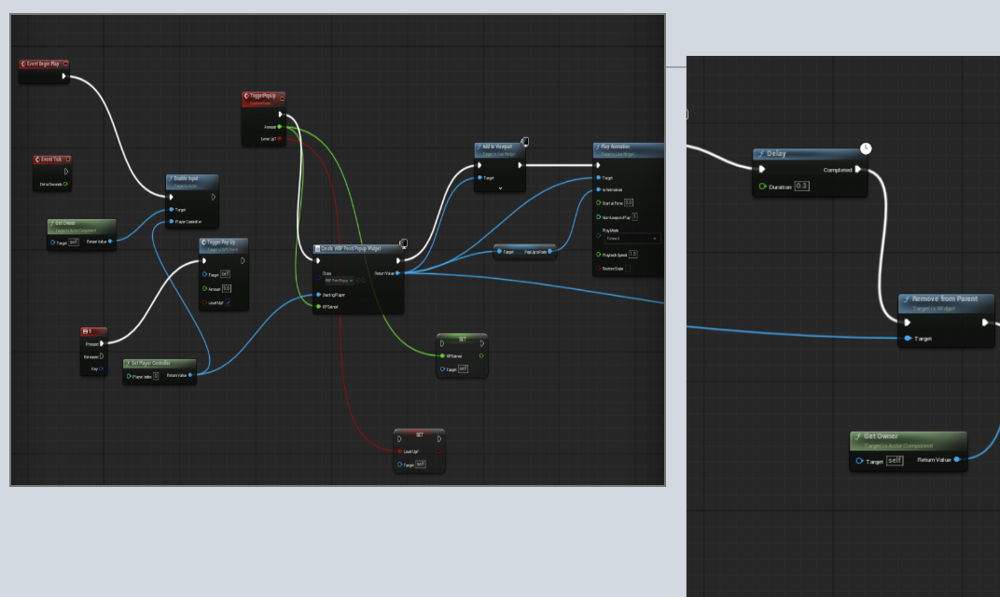
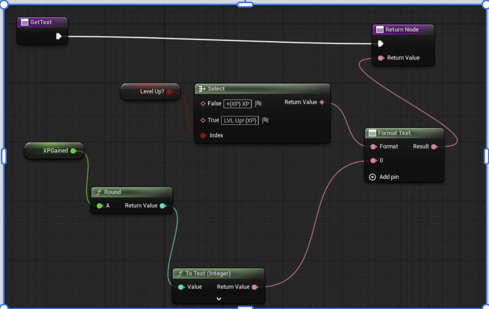
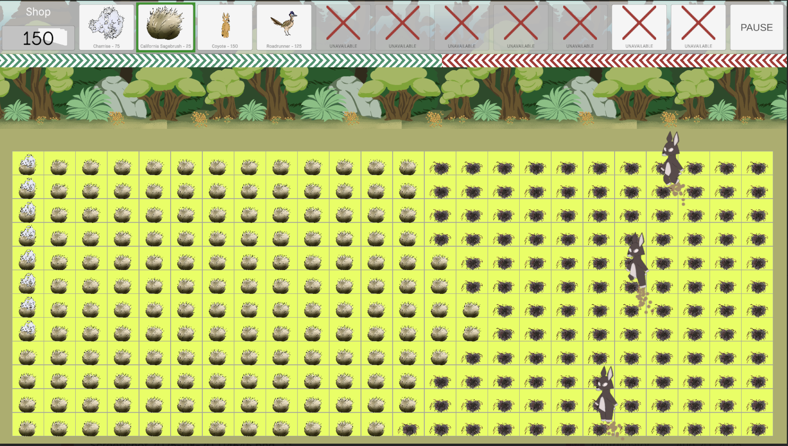
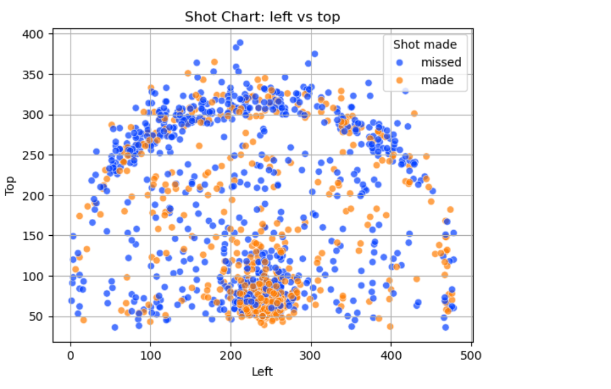

My Work
Climate Games — Serious Games for Global Impact
An educational game developed at the Qualcomm Institute focused on climate awareness and player engagement. Built collaboratively with a 10 person team using Unreal Engine 5. Currently in development as an internal UCSD project.
My Contributions:
- Implemented a UI widget displaying real-time XP gain notifications (e.g. +100 XP) with logic to switch to a level up state when XP exceeds the maximum threshold
- Built Blueprint logic managing the full widget lifecycle including creation, animation, and destruction
- Currently developing level progression logic triggered when XP exceeds the maximum threshold
- Unreal Engine 5
- Blueprints
- C++
- UI Design


Habitat Defenders
A tower defense game where native California species defend their ecosystem against invasive threats. Built collaboratively with a team of 5 during the Neurodiversity in Tech internship program at the Qualcomm Institute.
My Contributions:
- Designed the level UI and shop interface, including button layout and tower selection elements
- Built the foundation of the Almanac screen, a browsable species encyclopedia with a detail panel
- Integrated Creative Commons licensed voice audio to enhance gameplay immersion
- Implemented an FPS display for real-time performance monitoring
- Conducted QA testing through play-testing and coordinating external beta testers
- C#
- Unity
- QA Testing
- UI Design

LeBron James Shooting Accuracy Analysis
My first data analysis project — an exploration of LeBron James' shooting accuracy across various metrics. Built independently to learn Python and data visualization for the first time.
What I learned:
- Data cleaning and computation using Pandas
- Data visualization using Seaborn and Matplotlib
- Applying recursive functions and pass-by-reference techniques to optimize code
- Python
- Pandas
- Matplotlib
- Seaborn

Teaching & Mentorship
I enjoy supporting learning through peer collaboration and instructional demonstrations. I focus on breaking down programming concepts into clear, step-by-step processes that are easy for beginners to follow.
Teaching PortfolioAbout Me
I am a senior at UC San Diego studying Cognitive Science with a specialization in Design and Interaction, graduating in June 2026.
My interest in game development grew naturally from two things I've always loved: playing video games since I was a kid, and discovering through community college that coding was something I could actually do and enjoy. Compared to Physics and Math, coding felt more creative and immediately useful. What I enjoy most is the collaborative side, some of my best learning has come from working alongside teammates, bouncing ideas off each other, and figuring things out together.
I build interactive experiences through game development and UI design, with hands-on experience in Unity and Unreal Engine 5 through internships at the Qualcomm Institute and Neurodiversity in Tech.
Outside of tech I'm a classically trained trumpet player. I've performed paid gigs, marched the 2023 Rose Parade as a herald trumpet, and play with ensembles at UC San Diego. Music has shaped how I think about precision, timing, and the emotional impact of experiences.
I believe interactive experiences, designed thoughtfully, can reach learners that traditional approaches leave behind. That intersection of game development, cognitive science, and education is where I want to build my career.
My Resume
Get In Touch
Feel free to reach out if you'd like to collaborate or learn more about my work.
Email Me